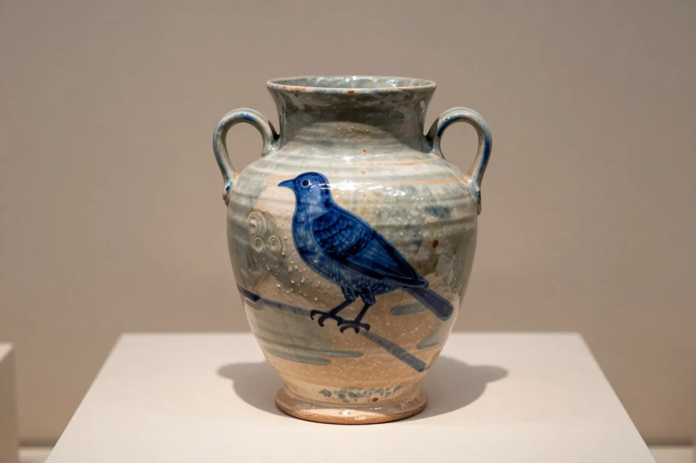

ceramics · 1800–1910 · also: Salt-glazed crock, Cobalt-decorated stoneware, Butter churn and jug ware
Straight-sided stoneware for the farm and the dairy: crocks, churns, jugs and jars. A salt or slip glaze makes the wall tight, and a swift cobalt motif marks the size.

Core thesis
A crock must hold butter, pickles or pork for a winter, so the body is dense stoneware and the only ornament is one quick blue brush stroke.
Design principles
Throw a straight-sided crock with a wall 10 to 14 mm thick; the weight resists frost and knocks.
Add two ear handles or a ring of lugs, 4 cm below the rim, to lift a 10-litre pot.
Mark the volume in gallons on the front: stamp or brush the number, 1 to 6.
Brush one cobalt motif, a bird, a flower or a leaf, in a few strokes of slip; the stroke blurs a little in the fire.
Glaze the pot with salt, or dip it in a brown Albany slip.
Fire the pots at 1200 to 1250 °C in a groundhog or beehive kiln, and throw salt at the peak.
Keep the rim plain and flat, so that a cloth and a stone fit on top.